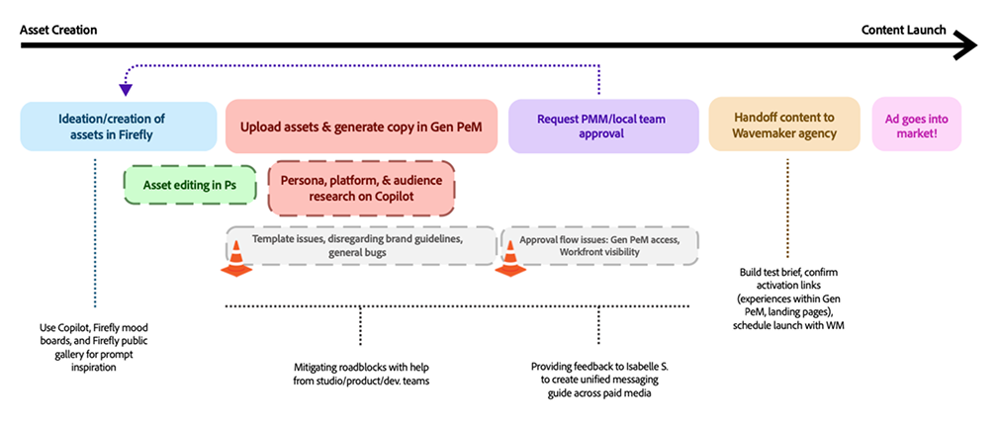
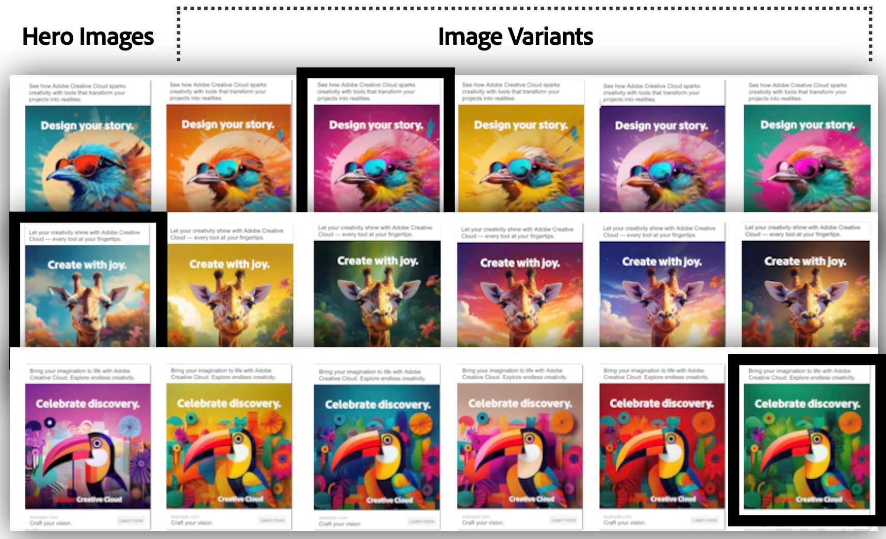
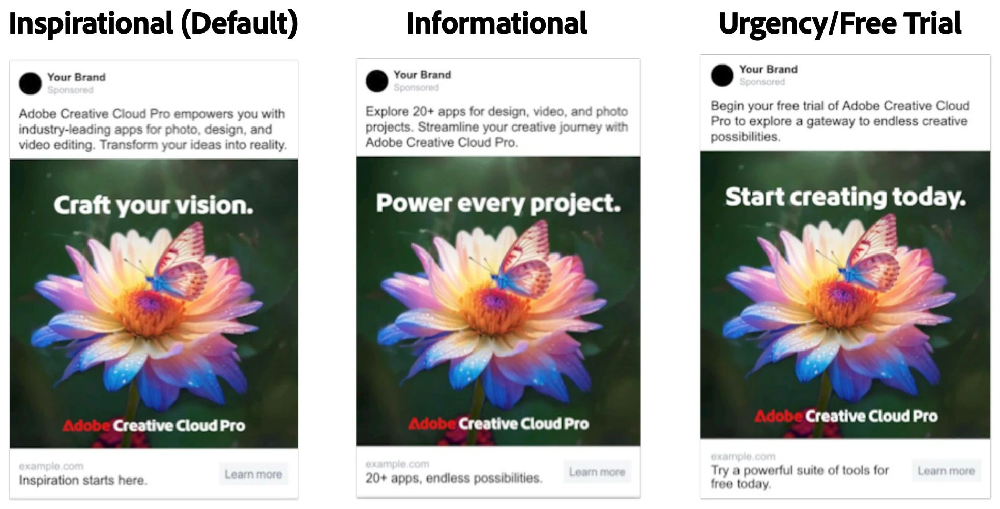
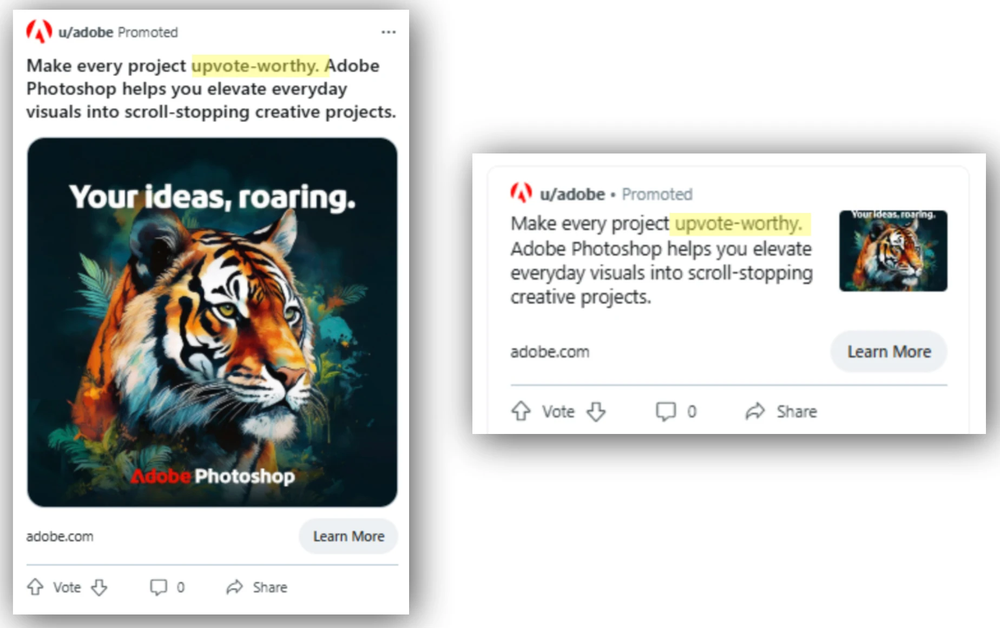
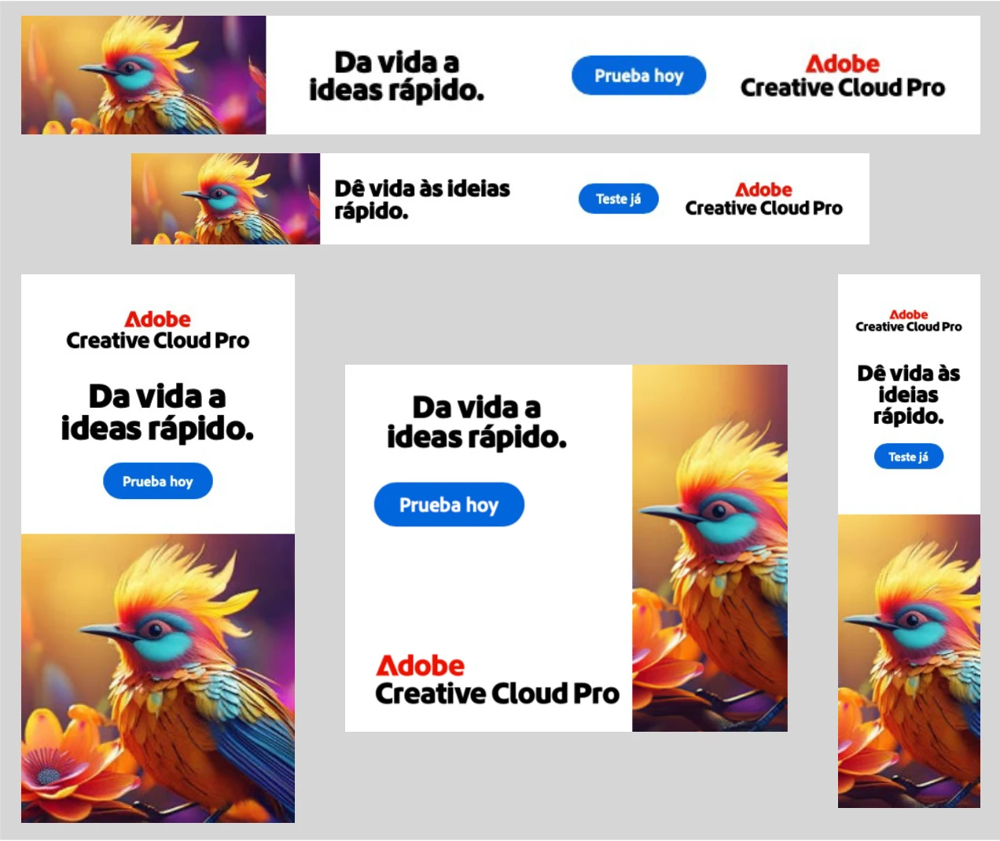
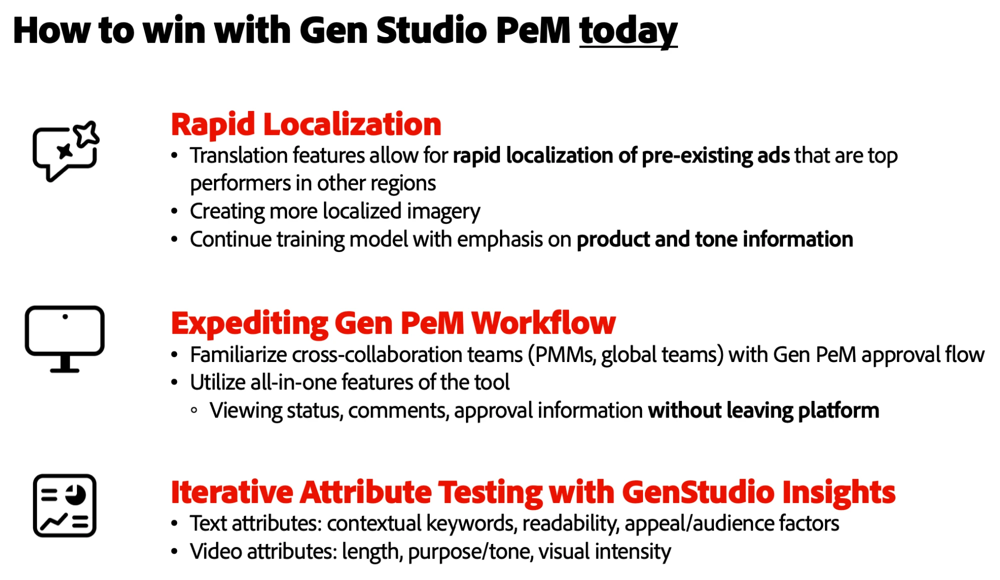
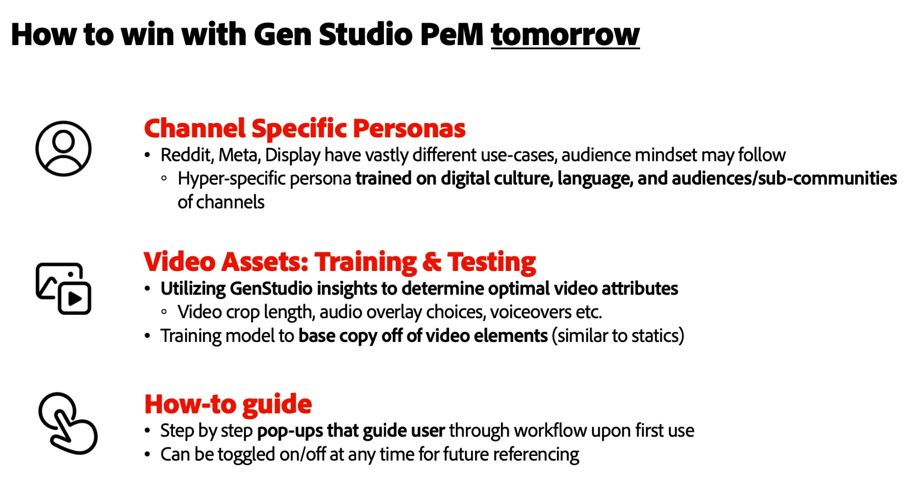
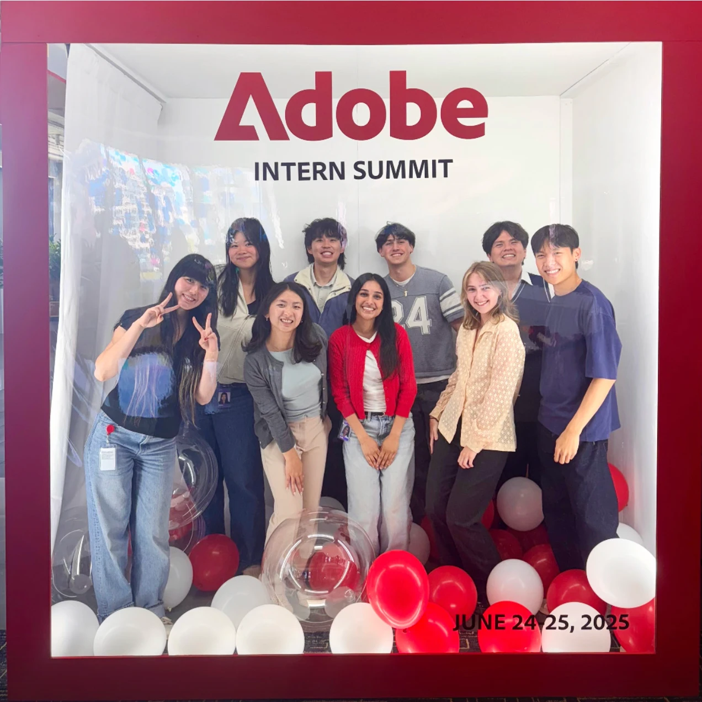

Performance/Product Marketing @ Adobe
Boosting paid social media content production, testing, and launches with AI tools
The Challenge
How might we rapidly scale global go-to-market (GTM) content across multiple social channels while ensuring high performance and ROI (return on investment)? And how can we leverage AI tools to do so?
What is Adobe GenStudio?
Have you ever been enticed by an ad while scrolling through Instagram, clicked through, and browsed the website you land on? If so, you've likely been part of one of the many metrics a performance marketing team tracks.
Adobe GenStudio is an end-to-end content supply chain tool powered by AI. It provides performance marketers the ability to rapidly create and launch ad sets, campaigns, and tests across a variety of social media platforms. GenStudio powers robust social/mail marketing for corporations ranging from Coca-Cola to IBM.
Campaign Creation
To improve a marketer's workflow and reduce launch roadblocks, I led creating new evergreen assets for Adobe's LATAM channels targeting students. I collaborated with a Brazil GTM manager and Copilot for theme ideation and research to ensure relevance. After finalizing three themes, I spent a week perfecting hero images in Firefly and Photoshop, then used GenStudio to develop copy, resize images, and globalize content.
I sent ads for approval via Workfront, working closely with product marketers on iterations. The entire LATAM student campaign process took four weeks — half the usual 8–10 — despite GenStudio bugs and approval issues, enabling faster launch, testing, and analysis.

LATAM Final Campaign
The finalized themes for this campaign included, respectively: your sound, your story, your style — "the colors of tradition, your creative path / su camino creativo."
This campaign showed how AI expedites and informs research, content creation, and copy messaging that holds longevity. However, the GenStudio in-house translation tool couldn't adjust for tone and messaging from prompt to result, leaving globalization as an effort requiring outreach to other teams. I passed this feedback to the GenStudio UX teams, who I worked closely with throughout the summer.
Testing, Testing...




Alongside the campaign, I led various GenStudio initiatives, including A/B testing for copy tone and imagery, and creating our first AI-generated Reddit assets. I provided weekly insights to product and UX teams and helped marketing with rapid content production and testing.
AI-Powered Playbook
While many team members were comfortable with the traditional ad creation, launch, and analysis process, it's important to recognize how much AI can expedite and simplify a marketer's workflow, as shown by my project.


To help the performance marketing and UX teams transition to an AI-positive workflow, I outlined my recommendations for current and future GenStudio usage in a Performance Playbook, shared across teams.
Learnings and Reflections

During my twelve weeks at Adobe, I gained a rounded view of what goes into paid social content creation, new product testing (GenStudio), how to give and provide actionable user feedback, and how to make AI a genuine ally in the process rather than a shortcut around it.
Moving from traditional processes can be scary and receive pushback, but it's clear how much AI can expedite lengthy processes and optimize the quantity and quality of content — a skill that's essential as a fast-paced and highly growth-based field like performance marketing.
I really enjoyed the cross-team collaboration opportunities with the UX design team for GenStudio — putting myself in the user's shoes (an actual user this time!) showed me how to both give and receive good feedback.